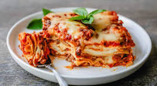

Lasagna

Let's make Lasagna!
We will be taking you step by step in the lasaga making process. You will learn what ingredients to use, how to prepare said ingredients for the dish, and the proper cooktime/temperature. Get that apron on, and your oven mitts handy because today we will be making a dish that the entire family will devour.
This recipe is simple enough for a novice, so let's dive in:
Ingredients:
- Meat: Sweet Italian sausage and lean ground beef.
- Onion and Garlic: One onion, two cloves of garlic.
- Tomato Products: One can crushed. two cans sauce, two cans paste.
- Sugar: 2 tbs white sugar
- Spices and Seasonings: Parsley, dried basil leaves, italian seasoning, fennel seeds, black pepper, salt.
- Lasagna Noodles: Store bought or homemade.
- Cheeses: Parmesan, Mozzarella, and Ricotta.
- Egg: One egg as a binder for the ricotta cheese.
Steps:
- Make meat sauce.
- Cook noodles.
- Make ricotta mixture.
- Layer lasagna according to instructions.
- Cover with foil and bake at 350degrees for 30 minutes.
- Let lasagna rest before serving.